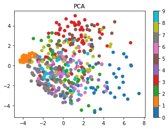

Downloading data from https://storage.googleapis.com/tensorflow/tf-keras-datasets/mnist.npz
11490434/11490434 [==============================] - 0s 0us/step
Test and Training Sets
For models with many parameters there is a real danger of overfitting, i.e. learning the specifics of one set of samples rather than generalizable rules.
For performance evaluation it is crucial to retain an independent (but representative) test data set that it is never used for fitting. Using keras functionality, we loaded both training data and test data at the same time. If your data does not come split, you may have to do one of the following:
Code
%%script echo Suggestions for general (X,y). Do not run herefract =0.80idx = numpy.random.permutation(X.shape[0]) # shuffle indicess =round(X.shape[0]*fract) # split pointtrain_idx, test_idx = idx[:s], idx[s:]X_train, X_test = X[train_idx,:], X[test_idx,:]# similar for labels# sklearnfrom sklearn.model_selection import train_test_splitX_train, X_test, y_train, y_test = train_test_split(X, y, train_size = fract)# keep in mind that the test data set should be representative# See here for stratified partitioninghttps://scikit-learn.org/stable/modules/generated/sklearn.model_selection.StratifiedKFold.html
Suggestions for general (X,y). Do not run here
Task (15 min): Data Inspection.
Inspect the types and shapes of the newly defined objects: X_train, y_train, …
Have a look at the data (array) of the 42nd training image and describe what you see
What is the maximal number?
Plot the image using plt.imshow
What is the label of this image?
Code
%%script echo edit here...
edit here
Data Normalization
Alert: Usually many more steps are involved in preparing data for analysis: reading, reformating, filtering, shuffeling, transformation, normalization. This can take up a significant amount of time.
Here we rely on a highly standardize data set and will only use normalization for illustration. It is important to do so consistently for both training and test data.
Code
# Run this code cell only once !!!X_train = X_train /255.0X_test = X_test /255.0
Flattening
A common procedure to process images is to first “flatten” them to a vector. This step will ultimately be done inside the neural network. The line below just illustrates the behaviour for a specific image:
from sklearn.decomposition import PCAns = X_train.shape[0] # total number of samplesnr =500# random number of subsamplesidx=np.random.choice(ns, nr, replace=False)X_sub = X_train[idx,:].reshape(nr,-1) # flatten each of the nr imagesX_pca = PCA(n_components =2).fit_transform(X_sub)print('Scores: ',X_pca.shape)cm = plt.get_cmap('tab10')plt.scatter( X_pca[:,0], X_pca[:,1] , c=y_train[idx], cmap=cm)plt.title('PCA')plt.colorbar()plt.show()
Scores: (500, 2)

Define and Compile Neural Network Model
New Elements - Relu Activation: Rectified Linear Unit (search for simple non-linearity) - Adam Optimizer: don’t get stuck in sharp local minima \(\to\) adaptive learning rates (100k citations !)
Code
nc = np.unique(y_train).size # number of classes / labels in training setl_name ='sparse_categorical_crossentropy'a_name ='sparse_categorical_accuracy'input_shape = X_train.shape[1:]print('X_train.shape: ', X_train.shape)print('input_shape: ', input_shape)print('number of classes: ', nc)mod1 = tf.keras.Sequential( name ='mnist_model_1')mod1.add( tf.keras.layers.Flatten(input_shape=input_shape) ) # flattens input to vector mod1.add( tf.keras.layers.Dense(128, activation='relu',name='1st_layer') ) # add layer with 128 nodes + relumod1.add( tf.keras.layers.Dense(nc, activation='softmax', name='softmax_layer') )mod1.compile(optimizer='adam', loss=l_name, metrics=a_name)mod1.summary()
We might want to save the trained model and the metrics history for latter use.
Code
model_fn ='minst_model.h5'# specifying .h5 generates one h5 file (rather than a directory)history_fn ='minst_history.npy'hist = fh1.history # dictionary in fh1 objectmod1.save(model_fn)np.save(history_fn, hist)
Loading Model and History
Code
%%script echo Run after new startmodel_fn ='minst_model.h5'history_fn ='minst_history.npy'mod1 = tf.keras.models.load_model(model_fn)hist = np.load(history_fn,allow_pickle=True).item()
Evaluation
Code
## Plotting history and test accuracydef plot_fit_history(hist, name='loss', test_score=0):"""Plots history of metrics 'name' The validation metrics will also be plotted if available as 'val_name' (Keras convention) A test_score can be added to compare the evolution"""if name notin hist:print('plot_fit_history: {} is not a key in history !'.format(name))return val_name ='val_'+ name plt.plot(hist[name], label='train')if val_name in hist:# add validation if in data plt.plot(hist[val_name], label='valid') plt.axhline(y=test_score, color='green', linestyle='-.',label ='test') plt.xlabel('Epoch') plt.ylabel(name) plt.legend(loc='upper left') plt.show()test_loss, test_acc = mod1.evaluate(X_test, y_test)a_name='sparse_categorical_accuracy'plot_fit_history(hist, 'loss', test_loss)plot_fit_history(hist, a_name, test_acc)
fn='figures/ANN_Digit3.jpg'# point to proper pathinput_size=X_train.shape[1:]
Using keras
Code
#%%script echo Make sure to set the proper image size (to match the model)from tensorflow.keras.preprocessing import image# load image # adjust to desired input_size (x,y) and convert RGB to grayscale (as MINST data)img = image.load_img(fn, target_size=input_size, color_mode="grayscale")print('filename: ', fn, type(img), input_size)# convert PIL to numpy and reverse 0<->255 (--> MNIST convention)img =255- np.array(img) # alternative: image.img_to_array(img)print('type, shape: ', type(img), img.shape)img = img /255.# Normalization (in line with MINST)plt.imshow(img, cmap='Greys')print('img.shape:', img.shape)
# remember to reshape single image to network expectation = set of imagesimg = img[np.newaxis, ...]pred=mod1.predict(img)fig, ax = plt.subplots(1,2, figsize=(12,5))ax[0].imshow(img[0], cmap='Greys')ax[1].bar(range(10), pred[0])ax[1].set_xticks(range(10))ax[1].set_title(np.argmax(pred))plt.show()